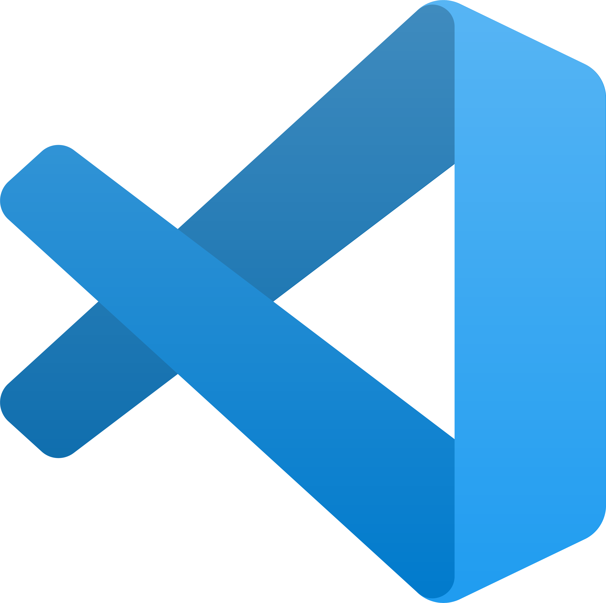

What to Look for in a Web Development Tool
Article sourced from ©Hostringer.
As a beginner who wants to step into the world of web development, these are the 3 things we are looking for when it comes to web development tools:
Ease of Use
How easy is it to actually use the program and whether it meets your needs as a developer. A program should allow you easily work on tasks and projects (within your own ability and skillset) while dealing with few errors or setbacks.Price
How much it costs, whether it's a one-time fee or a subscription paid weekly, monthly, etc. Many people who are first starting out with web developing may prefer a free program than one that costs money.Learning Curve
How long it takes to learn how to work and understand the tool you're using. Does the program provide tutorials on how some of the functions of the program work and are they clear and easy to understand? If you have to look up multiple Youtube tutorials on the program and how it works, it's most likely not a good fit for you and your skill level.
1. GitHub
Github is an web-based, open-source Git repository hosting service. It is a free program and allows you to make unlimited repositories. There is a paid version in which you can access more advanced features, like Github Codespaces. There is mobile support, so you can use this program on your phone as well. Github offers tutorials on how to create your own repository and other functions. If working on a project with a team, Github offers a code scanning tool that identifies security flaws. If you know the basics to html coding, this is a great program for beginners.
Credit to © Brand Logo for image.
2. Chrome Developer Tools
Chrome Developer Tools is a set of web development tools built into the Google Chrome browser. You can directly edit and update your web page from the program itself. If skilled in Javascript, it can be used to debug Java code. Any changes made will be saved to your computer. Chrome Developer Tools offers a program called "Lighthouse", in which it helps perform audits on web pages and checks for performance, accessibility, and more. It is completely free to use while you have the Chrome browser. However, there is a lot to learn with the program, so for some it may take a while to get comfortable with its use. There is also very few ways to edit and modify code.
Credit to © Brand Logo for image.

3. Sublime Text
Sublime Text is best for beginners who are just learning how to code. It is an all-in-one text editor for code, markup, and prose. The code editor is free, but you do need a license to use it. Licenses cost about $99 for personal usage, and $65 a year for business usage. They offer support and tutorials on how to use the program on their website. There are pop-ups for its payment plan, so be wary of those.
Credit to © Sublime HQ for image.

4. Marvel
Marvel is best used in a business setting or working with a team. It is great for wireframing and allows you to quickly and easily design different projects. It automatically generates CSS for elements and makes a shareable URL to send to your teammates. There are many integrations that you can add alongside this program, such as Youtube, Dropbox, etc. It has a free plan but comes with limited features, however, there are three premium plans: Pro for $12 a month, Team for $42 a month, and Enterprise, which has to be requested. There is a discounted rate for non-profits and students.
Credit to © Marvel App for image.

5. Visual Studio Code
Visual Studio Code is an open-source code editor. It has a built-in terminal and debugger, syntax highlighting, and Git commands to make coding faster and easier. It supports code analysis tools and has integrations with other tools such as Git, ESLint, etc. This program has a big library of extensions that you can download and add to your workspace. They also offer tutorials on how their programs work. It is completely free to use, but the tool can take up a lot of disk space and sometimes crash.
Credit to © Brand Logo for image.
6. Node Package Manager (NPM)
Node Package Manager, also known as NPM, is a Javascript software registry for sharing and deploying packages. It can be used to find and install code packages for networking applications or server projects. This helps simplifies the development progress of bigger projects. There is a large registry of Javascript packages, and you can create repositories for your projects. The website offers a few tutorials, but you may have to look up information to figure the functions out. There is a free version, but there are also two paid versions: Pro for $7 a month, and Team for $7 a month for team-based management options.
Credit to © Wikimedia Commons for image.

7. Sass
Sass, also known as Syntactically Awesome Style Sheets, is a popular preprocessor for the CSS framework. It is also great as a beginner's tool for making a website, as you are allowed to change and edit user interface elements, color, etc. It has built-in frameworks and is very beginner-friendly. It has tutorials on its website to teach you more about Sass and CSS. It is completely free to use. However, the program runs slower when handling large files and to compile the code will require you to download a different program named LibSass or Ruby.
Credit to © the Sass website for image.
8. Bootstrap
Bootstrap is a widely-used, front-end development framework for making websites. It works well with HTML, CSS, and Javascript and you can further your learning of Bootstrap by making themes for websites, like WordPress. It has many customizable and responsive features, and has its own predefined grid system within the program. It has sets of Javascript libraries which you can add to your projects. It has extensive tutorials and documentation pages, making it easy to learn how to work and use Bootstrap. It is completely free to use, but your computer may slow down to due to the file size of your project within the program.
Credit to © Wikimedia Commons for image.
9. Grunt
Grunt is a Javascript task runner for automating repetitive tasks, like compilation, unit testing, etc. It allows you to improve project efficiency and implement coding style guides throughout your projects. The program is highly customizable, allowing you to customize and modify for your projects. There is integration with NPM, and has a wide array of Javascript tools. Grunt is completely free, and is also available to download via Github. There are tutorials and guides on the website to help you learn and understand Grunt. There are compatibility issues with older versions and there is some delay with plugin updates.
Credit to © Wikipedia for image.
10. Ruby on Rails
Ruby on Rails is a full-stack framework for building reliable web apps. It is mainly used for server development, but it can also be used to render HTML and update web pages in real time. This program is most popular with businesses and startups. There are built-in libraries within the program, and it has integration with popular front-end frameworks, like React and Angular. The websites has tutorials and guides on how the program works and how to start projects. Ruby on Rails is completely free to use. The program does run slow when working with larger projects and there is less flexibility making feature-heavy projects.